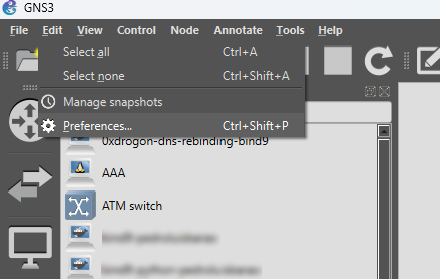
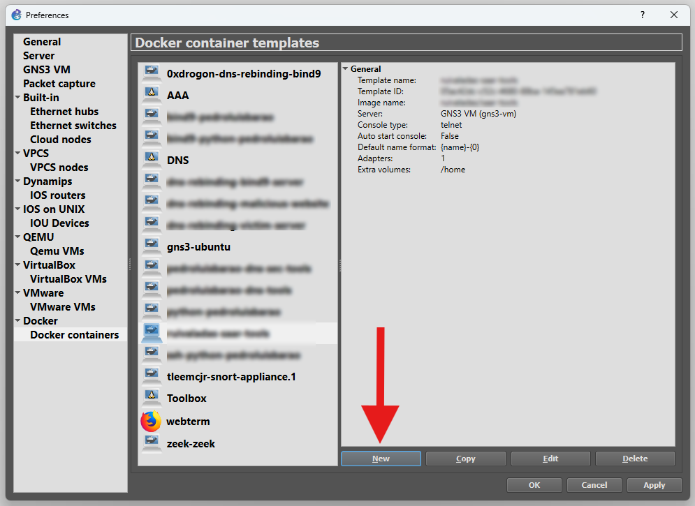
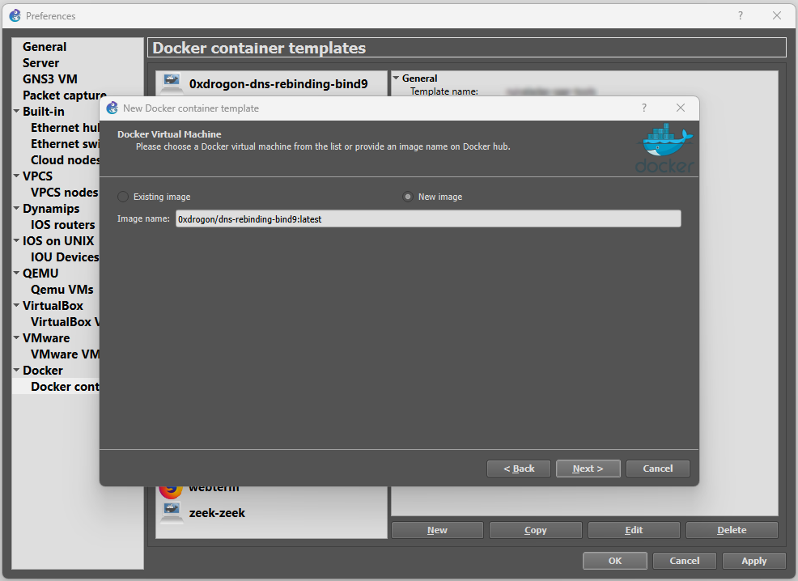
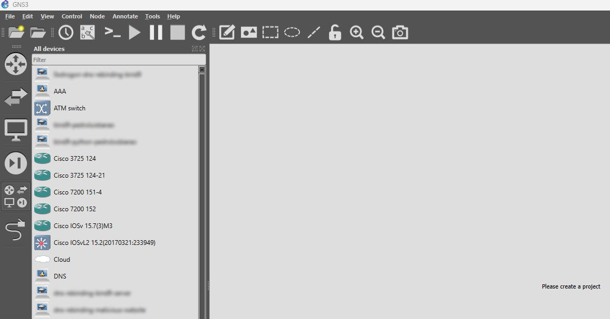

Lab Setup
This guide is designed as an essential companion to the lab guides, ensuring you can properly set up the laboratory environment before diving into the specifics of each experiment. The laboratory environment is designed for local deployment on a single host, allowing you to replicate real-world DNS scenarios in a controlled setting. All attack scripts used in the experiments are available on GitHub. The scripts for each experiment are also available for download in each lab guide.
Docker Containers
A Docker container image, pedroluisbarao/dns-sec-tools:latest, is provided through Docker Hub to facilitate deployment. This image will be the basis for many machines such as BIND DNS servers as well as most other machines, excluding those who indicate a different image/template.
Add Docker based machines
Start by importing the docker image. To add it to GNS3, go to Edit>Preferences>Docker containers.


Then click New and select New image, add the full name of the image like in the figure below.


Now you should be able to just grab the desirable device from the devices panel on the left and drop it on the project area to start configuring.
If you want to make changes to the machines persistent consider going to the Configure option of the machine options menu, then select Advanced, and on Additional directories to make persistent that are not included in the image VOLUMES config. One directory per line. add the directories you want to make persistent. We recommend /home, /usr, /var and /etc.
Machines’ Configuration
You should replicate the GNS3 lab topology found in the specific lab guide, be sure to use the same network interfaces. For some routers and specific machines, sometimes there is the need to increase the number of interfaces. In each lab guide a list of IP addresses for the machines used in that lab will be provided, as well as other necessary configurations, which can include BIND configurations.
On GNS3, each Docker container-based machine has an editable configuration which can make the initial setup more practical. Right-Click on the machine and select Edit config, and paste in a configuration like the one below.
Example configuration of a Docker container-based DNS Server (the up line activates Bind when the machine is in start up):
auto eth0
iface eth0 inet static
address 10.0.1.1
netmask 255.255.255.0
gateway 10.0.1.254
up named -c /etc/bind/named.conf
Example configuration of a Docker container-based Bot-like machine (the up line activates when the machine is in start up):
auto eth0
iface eth0 inet static
address 10.0.8.1
netmask 255.255.255.0
gateway 10.0.8.254
up echo nameserver 10.0.0.1 > /etc/resolv.conf
up /etc/init.d/ssh start
up chown root:root /usr/bin/sudo
up chmod 4755 /usr/bin/sudo
Some routers can only be configured using the console. You should the commands one by one. Below is an example of a router with 3 interfaces.
conf t
ip routing
interface f0/0
ip address 10.0.2.254 255.255.255.0
no shutdown
interface f0/1
ip address 10.0.1.254 255.255.255.0
no shutdown
interface f1/0
ip address 10.0.3.254 255.255.255.0
no shutdown
exit
exit
wr
Don't forget to type wr at the end to ensure the configurations are persistent through reboots.
DNSMasq
To use DNSMasq import DNS appliance of GNS3. Select Browse all devices>New template>Install an appliance from the GNS3 server (recommended), then use the filter DNS, select the available appliance with the same name and install.
Once installed, in the Edit config option of the DNS Server machine be sure to add the following configurations (specially relevant if running DGAs Lab):
auto eth0
iface eth0 inet static
address 192.168.20.2
netmask 255.255.255.0
gateway 192.168.20.1
up /etc/init.d/ssh start
up chown root:root /usr/bin/sudo
up chmod 4755 /usr/bin/sudo
up chown root:root /usr/lib/sudo/sudoers.so
Before using the dnsmasq service a few configurations are needed. Go to the configuration file.
nano /etc/dnsmasq.conf
Add the lines in the appropriate place:
listen-address=192.168.20.2
addn-hosts=/etc/dnsmasq.d/hosts/dynamic_hosts.txt
Add a new user with some special permissions (if you are not running as root user you need sudo before each command):
chown dnsadmin:dnsadmin /etc/dnsmasq.d/hosts
chmod 755 /etc/dnsmasq.d/hosts
chown dnsadmin:dnsadmin /etc/dnsmasq.d/hosts/dynamic_hosts.txt
The /etc/dnsmasq.d/hosts/dynamic_hosts.txt file is where the new “host, IP address” pairs will be configured.
To see the changes and use the dnsmasq service, reset using these commands:
pkill dnsmasq && dnsmasq
BIND
Since BIND is used in the majority of the labs, there are many configuration variations.
Sometimes there will be bind files like named.conf.root-hints or named.conf.default-zones that will have conflictive information about the zones like root zone. It's better to edit named.conf file to make sure it isn't including these file sources or even removing these files outright.
Every time you want to reset a BIND DNS servers cache is easier to just reset BIND named service using:
pkill named && named -c /etc/bind/named.conf
If you are configuring DNS Resolvers be sure to check if /etc/bind/db.root has the correct address of Root Server (if you are using a Root Server in that particular simulation), and also if in /etc/resolv.conf the address listed as nameserver is 127.0.0.1 (loopback).
Root Server
Example of Root Server configuration:
nano /etc/bind/named.conf.options
options {
directory "/var/cache/bind";
recursion no;
allow-query { any; };
listen-on port 53 { any; };
};
nano /etc/bind/named.conf.local
zone "." {
type master;
file "/etc/bind/db.root";
};
nano /etc/bind/db.root
$TTL 86400
@ IN SOA root.example.com. admin.example.com. (
1 7200 3600 1209600 86400 )
IN NS ns.root.
ns.root. IN A 10.0.0.1
com. IN NS ns.com.
ns.com. IN A 10.0.1.1
TLD (Top Level Domain) Server (.com)
Example of TLD Server configuration for .com:
nano /etc/bind/named.conf.options
options {
directory "/var/cache/bind";
recursion no;
allow-query { any; };
listen-on port 53 { any; };
};
nano /etc/bind/named.conf.local
zone "com." {
type master;
file "/etc/bind/db.com";
};
nano /etc/bind/db.com
$TTL 86400
@ IN SOA ns1.example.com. admin.example.com. (
1 ; Serial
7200 ; Refresh
3600 ; Retry
1209600 ; Expire
86400 ) ; Minimum TTL
IN NS ns.com.
ns.com. IN A 10.0.1.1
; Delegate example.com to authoritative server
example.com. IN NS ns1.example.com.
ns1.example.com. IN A 10.0.2.1
Authoritative Server (example.com)
Example of Authoritative Server configuration for example.com:
nano /etc/bind/named.conf.options
options {
directory "/var/cache/bind";
recursion no;
allow-query { any; };
listen-on port 53 { any; };
};
nano /etc/bind/named.conf.local
zone "example.com" {
type master;
file "/etc/bind/db.example";
};
nano /etc/bind/db.example
example.com. IN SOA ns1.example.com. admin.example.com. (
1 7200 3600 1209600 86400
)
NS ns1.example.com.
ns1.example.com. A 10.0.2.1
@ IN A 10.0.3.1
www IN A 10.0.3.1
secret-host IN A 10.0.10.1
mail IN A 10.0.3.100
mail IN MX 10 mail.example.com
testa IN A 10.0.10.1
testb IN A 10.0.10.1
testc IN A 10.0.10.1
Resolver (no zone hosting)
Example of Resolver configuration acting only as recursive resolver without zone hosting:
nano /etc/resolv.conf
nameserver 127.0.0.1
nano /etc/bind/named.conf.options
options {
directory "/var/cache/bind";
recursion yes;
allow-recursion {any; };
allow-query { any; };
listen-on { any; };
};
nano /etc/bind/named.conf.default-zones
zone "." {
type hint;
file "/etc/bind/db.root";
};
nano /etc/bind/db.root
. 3600000 IN NS .
. 3600000 IN A 10.0.0.1
Resolver (with zone hosting, example.com)
Example of Resolver configuration also hosting zone example.com:
nano /etc/resolv.conf
nameserver 127.0.0.1
nano /etc/bind/named.conf.options
options {
directory "/var/cache/bind";
recursion yes;
allow-recursion {any; };
allow-query { any; };
listen-on { any; };
};
nano /etc/bind/named.conf.local
zone "example.com" {
type master;
file "/etc/bind/db.example";
};
nano /etc/bind/db.example
example.com. IN SOA ns1.example.com. admin.example.com. (
1 7200 3600 1209600 86400
)
NS ns1.example.com.
ns1.example.com. A ##RESOLVER_IP##
@ IN A 10.0.3.1
www IN A 10.0.3.1
secret-host IN A 10.0.10.1
mail IN A 10.0.3.100
mail IN MX 10 mail.example.com
testa IN A 10.0.10.1
testb IN A 10.0.10.1
testc IN A 10.0.10.1
The resolver could also host a TLD zone and then have another machine acting as Authoritative server.
See BIND's cache
In order to see the content in BIND's cache you might need to perform a few configurations.
First, check if you can already access it:
rndc dumpdb -cache
nano /var/cache/bind/named_dump.db
If not, change file named.conf:
include "/etc/bind/named.conf.options";
include "/etc/bind/named.conf.local";
include "/etc/bind/named.conf.default-zones";
include "/etc/bind/rndc.key";
controls {
inet 127.0.0.1 port 953
allow { 127.0.0.1; } keys { "rndc-key"; };
};
Generate the rndc-key:
rndc-confgen -a -c /etc/bind/rndc.key
Using SSH
For the C&C Server to be able to run commands on the a machine remotely via SHH it will need new user credentials.
adduser test
usermod -aG sudo test
groups test
To simplify running commands, we will a no-password needed clause to certain commands used by the C&C Server.
visudo
At the end of the file you can add:
test ALL=(ALL) NOPASSWD: /usr/sbin/named, /usr/bin/pkill named, /usr/bin/python3, /usr/bin/tee
Snort
To use Snort you will need to add a docker image, tleemcjr/snort-appliance.1:latest, to GNS3. Check Add Docker based machines to complete the process.
If you are using Snort in inline mode, you should check if the following are as follows and if not modify them. Replace #SUBNET_IP with the correct subnet IP address of where the Snort machine is use, should look like 192.168.10.0/24
nano /etc/snort/snort.conf
ipvar HOME_NET #SUBNET_IP
…
config daq: afpacket
config daq_mode: inline